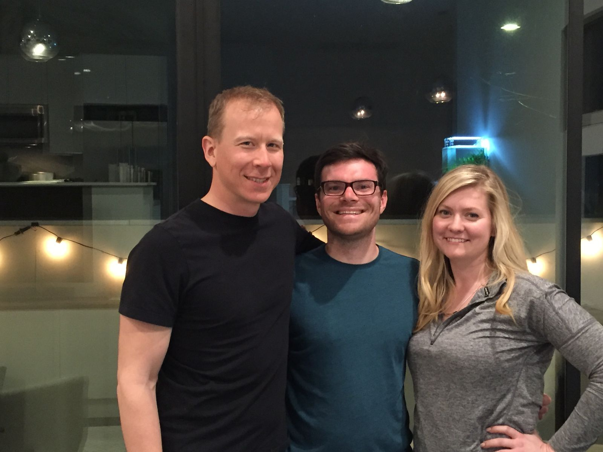
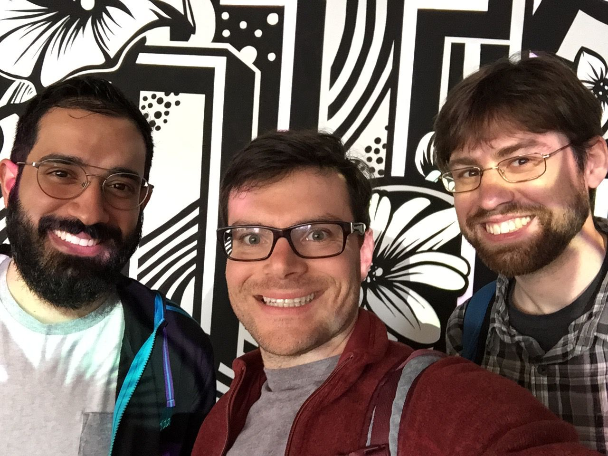

Friendship is Magic
The first part of my trip, in some parts planned and some parts unplanned, has been reconnecting with friends. For me, seeing friends while traveling is nothing unusual. Most of my solo travel revolves around spending time with friends. It will actually be the later part of the trip when I am roaming the Pacific Coast Highway alone that will be novel for me.
Here, though, the amount of close friends I have seen is remarkable. To start, I visited my friends in Oakland (celebrating one of their birthdays in Tahoe) along with a high-school friend turned co-worker. After the ski weekend in the cozy cabin, my high school friend and I wandered San Francisco and caught up with another former co-worker.
To my surprise, I learned that my high school robotics team's mentor has been living in San Francisco for the last decade. One of my closest high school friends and robotics team co-captain happens to be staying in the Bay Area this month. And a high school friend who was the team captain the two years preceding me also lives in the Bay Area. We all met up for pizza, perhaps for the first time since 2007 when we would do that nearly every week at times.
Before I take off to spend some time with family and then on my own, it was great to reconnect with so many friends.

